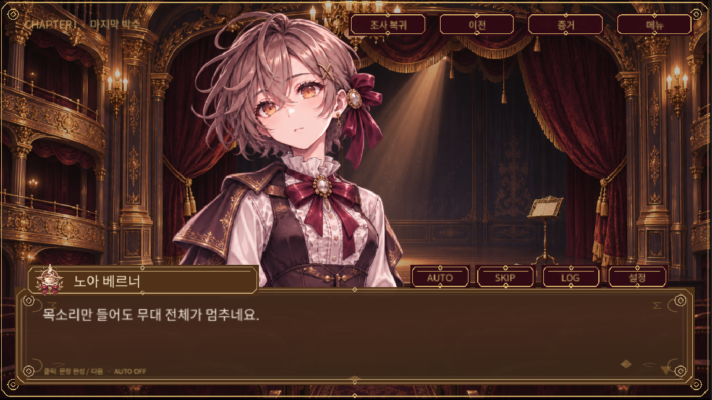

재미를
규칙으로 만들고,
결과로 검증합니다.
실제 구현 화면과 설계 데이터가 있는 두 대표작에 집중합니다. 개발·검증 중에 남긴 판단과 중단 프로젝트의 유용한 규칙은 별도의 Design Lab에 정리했습니다.
 01 / SYSTEM & BALANCE
01 / SYSTEM & BALANCE
02 / MYSTERY & UI두 프로젝트, 서로 다른 기획 역량
타워 디펜스는 전투·경제·밸런스의 구현 및 데이터 설계, 《가면과 진실》은 추리의 정보 구조와 UI를 중심으로 보여줍니다.
중앙 적층형
타워 디펜스
타워가 강해질수록 주변 세계가 작아지는 성장 경험. 150개 일반 웨이브의 고정 데이터와 밸런스 분석을 통해 성장·전투·난이도를 연결한 협업 프로젝트.
실제 프로토타입 화면 · 임시 그래픽《가면과 진실》
같은 사건을 서로 다른 사고 방식으로 검증하는 추리게임. 노아의 직선형 추론과 아드리안의 다층 교차 검증을 플레이 가능한 UI로 설계.
완성하지 못한 게임에서도
남겨야 할 설계 판단은 있습니다.
마피아 · 뱀서류 · 버블 · 5라인 디펜스 · 정보전략 시뮬레이션에서 검증 가능한 규칙과 문제 분석만 골랐습니다. 미구현·보류 상태는 분명히 구분합니다.
5개 기획 사례 보기 ↗시스템의 분량보다 판단의 근거를 보여줍니다.
기획 문서의 분량이나 아트 완성도보다, 왜 이 규칙이 필요했고 무엇을 검증해야 하는지에 집중합니다.
의도부터 정의
플레이어가 경험할 감정과 행동을 먼저 정의하고, 그 경험을 발생시키는 시스템 규칙을 설계합니다.
데이터·예외 처리
확률·자금·등장 시간·우선순위·반례를 문서와 데이터로 구체화해 개발자가 구현할 수 있도록 합니다.
검증과 수정 이력
시뮬레이션과 프로토타입을 구분하고, 발견한 문제와 규칙을 고친 이유를 추적합니다.
상상한 장면을, 작동하는 규칙으로.
아이디어를 제안하는 데서 그치지 않고, 플레이어의 행동을 규칙과 데이터로 정리한 다음 실제 결과를 확인하는 기획자를 지향합니다. 무엇을 고민하고 어떻게 협업하는지, 그리고 전체 자기소개서는 ABOUT ME 페이지에서 확인할 수 있습니다.